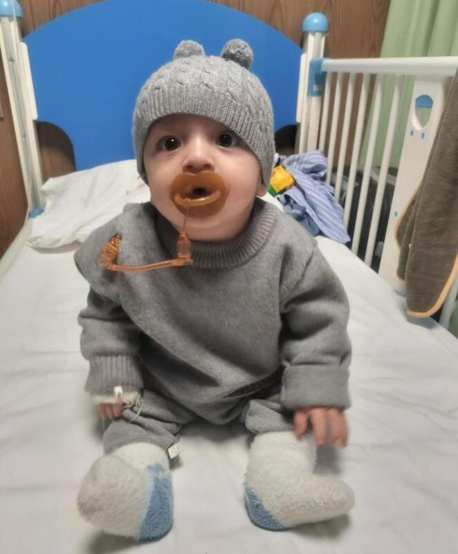

All children

Xiao Su
Basic Information
| Birth Year | 2025 |
| Gender | Male |
| Origin | Yining, Xinjiang |
| Diagnosis | Tetralogy of Fallot (TOF) |
Medical Information
| Hospital | Shanghai Yida Hospital |
| Admitted | January 12, 2026 |
| Surgery Date | January 21, 2026 |
| Status | First of two surgeries completed |
Donation Summary
June 11, 2025 · YK Pao School Parent Donation
¥30,000.00
Total Raised
¥30,000
Story
Xiao Su was born in May 2025 and was diagnosed with congenital heart disease at Yining People's Hospital shortly after birth. He has Tetralogy of Fallot, a combination of four heart defects that reduces the oxygen in his blood. His condition needs two open-heart surgeries, and doctors advised that the first should be done as soon as possible.
He lives with his Uyghur parents in a rented house in rural Xinjiang. His father works odd jobs locally and his income is unstable, so the family could not afford to travel to a surgery centre, let alone pay for the operation.
A ¥30,000 donation from YK Pao School parents covered his first surgery, which took place at Shanghai Yida Hospital on January 21, 2026.